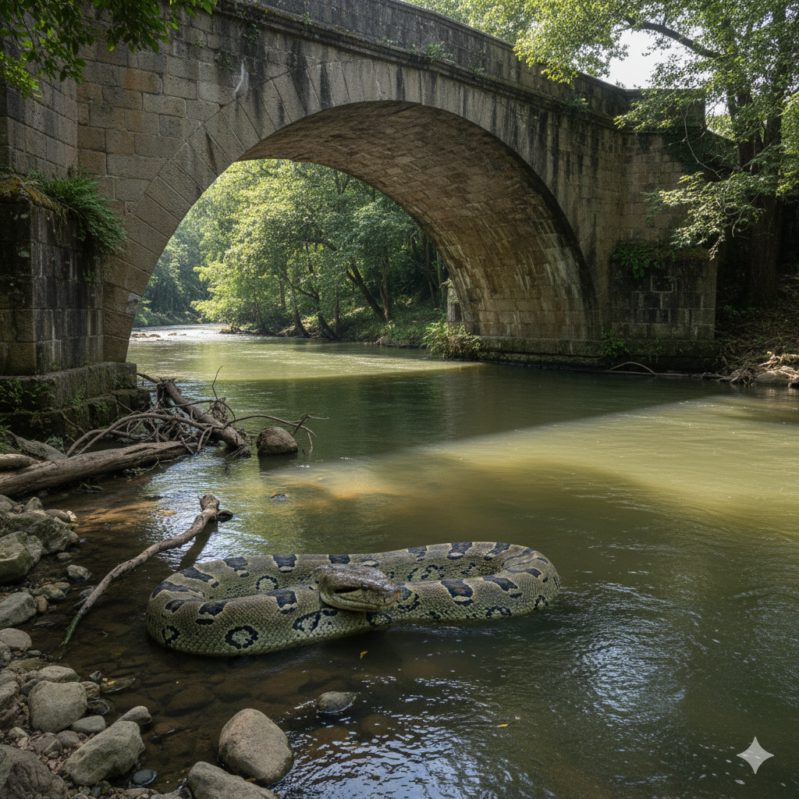

La teoria de la anaconda
Se dice que una anaconda se esconde en lo mas profundo del apancle ubicado en docencia unooooooooo, varios han visto esta anacondaaaa, los alumnos de primer cuatri estan sumamante... asustadoooos, algunos expertos dicen que esta anaconda no es nada mas ni nada menos que el espirituro de un malgino profesor que ya no se encuentra, el temible profesor H. mas sin embargo la existencia de este ente no es mas que una leyenda que se cuenta boca boca, usted que opina, usted tiene la ultima palabra, esto fue tercer milenio.
Imagenes de la anacondaaaa
Testimonios
-renegul
Renegul nos relata que en realidad el nunca vio a la anaconda, es mas que nunca habia entrado a la utez, pero una vez se entero le dio mucho miedo buuuuu